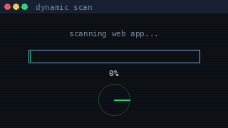
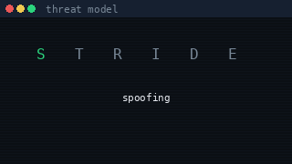
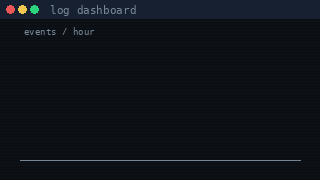

toolkit
Hover a card to profile it. Filter by area.

Web & API testing
Burp Suite Pro, OWASP ZAP, Postman, Vooki.

API clients
Request crafting and response review.

Mobile security
Android and iOS with MobSF and Frida.

VAPT
Assessment, triage, retest, repeat.

AI & MCP security
Reviewing how models, guardrails, and tools interact.

Cloud audits
Azure and GCP configuration and access reviews.

Threat modelling
STRIDE and architecture reviews.

DevSecOps pipelines
GitHub and Azure DevOps with security gates.

CI/CD scanning
Jenkins, Veracode, SonarQube, Checkmarx.

Logging & monitoring
Splunk dashboards and log pipelines.